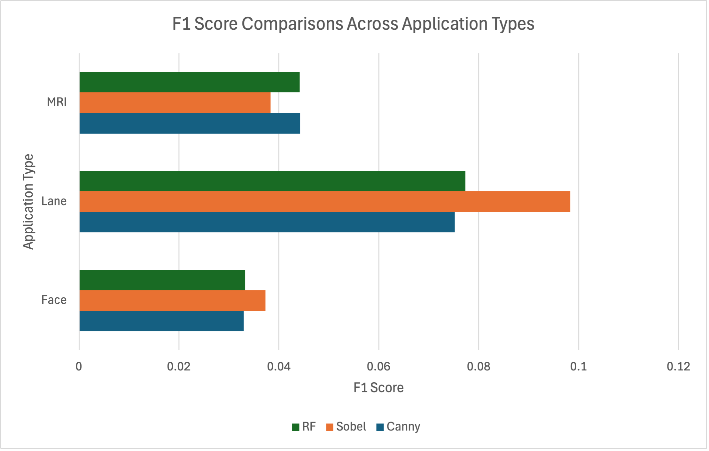
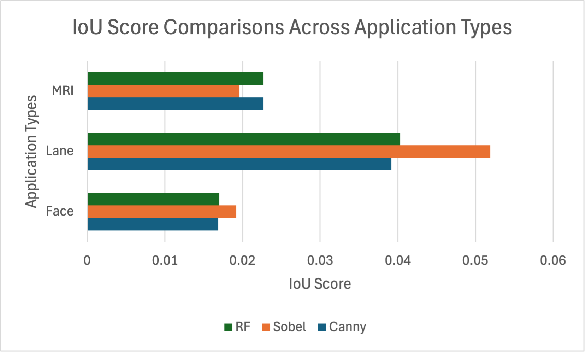
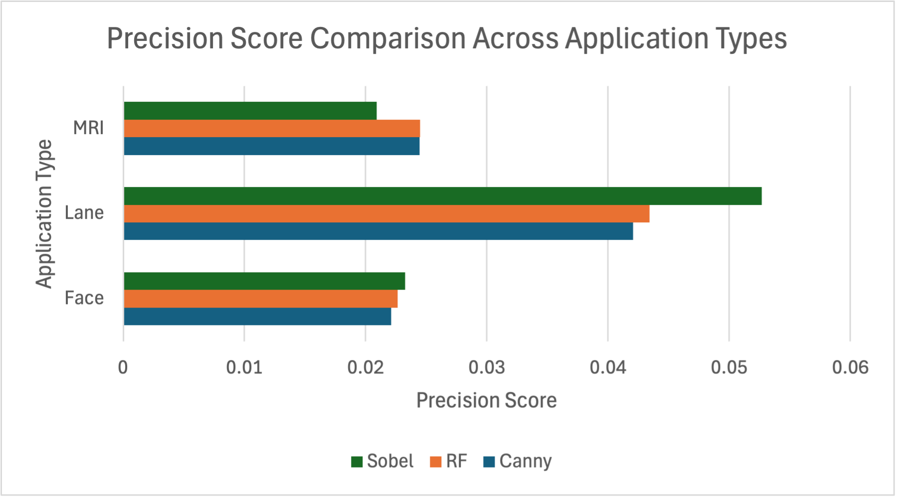
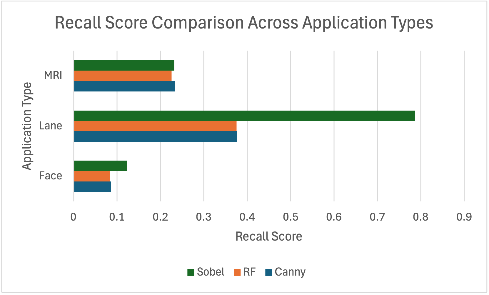
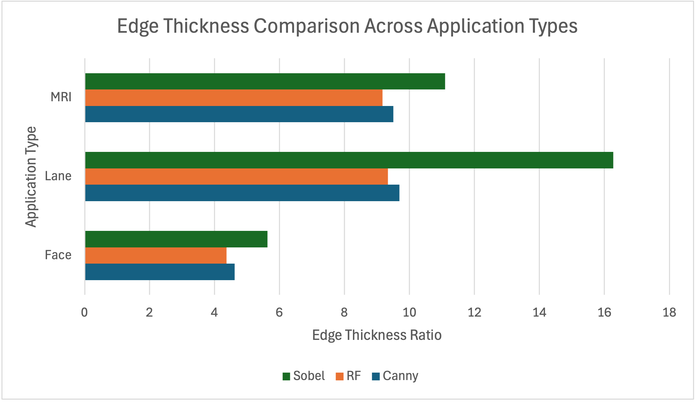
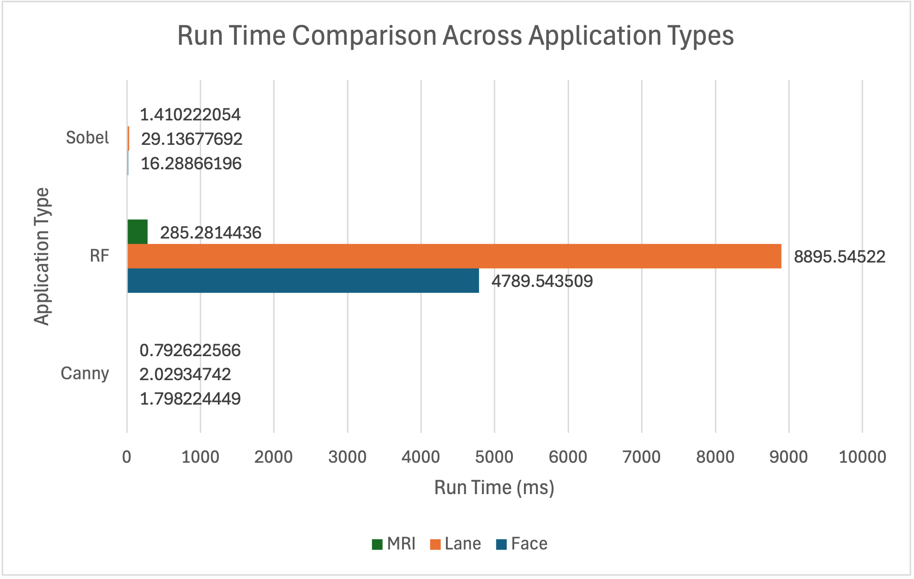

When you look at a picture, what do you notice first? Do bright colors or patterns draw your attention? Do your eyes go straight to the center, or do you take in the surroundings first?
Analyzing what we see as humans is an almost automatic process. We look at something, take a few seconds to analyze, but very quickly determine what we are looking at and understand its meaning almost instantly.
As technology has advanced, computers have started to mimic this ability, taking in images, analyzing them, and assigning meaning in a way that begins to resemble human vision. However, this process is nowhere near as automatic for computers as it is for humans. Several computational methods give computers the ability to analyze images or scenes. One key method is feature extraction.
What is Feature Extraction?
When a computer takes in an image, it is essentially receiving a pile of unstructured data in the form of pixels. Feature extraction transforms this data into meaningful features and objects that computers can analyze and assign meaning to.
While this post focuses on feature extraction from images, it is important to note that feature extraction can also be applied to other forms of quantitative data or even text and is not limited to images. A few common image-based applications of feature extraction include autonomous vehicle navigation, extracting features from EEG or MRI data to help physicians detect diseases, and detecting facial features for Face ID on a phone.
The bigger question, however, is how do computers know how to do this? How exactly do they detect these features? There are a variety of methods used for feature extraction including edge detection, corner detection, blob detection, and texture analysis. Edge detection identifies boundaries within an image to detect objects. Corner detection identifies areas in an image where the intensity drastically changes in multiple directions. This indicates the presence of corners or boundaries between edges which can be valuable for image alignment or object tracking tasks. Blob detection detects regions in an image that exhibit significant differences in properties such as brightness, color, or texture compared to the surrounding regions. Regions with these significant differences are called “blobs” and detecting them can be useful for tasks like object recognition or image segmentation. Texture analysis quantifies and characterizes the spatial arrangement of pixel intensities in an image. This can be a key component for segmentation and recognition tasks.
Of these methods, edge detection plays a particularly important role in feature extraction by simplifying images and retaining only key structural information. This allows subsequent tasks, such as object recognition or image segmentation, to be performed more efficiently, since the computer no longer needs to process every pixel in the image.
Edge Detection: Background, Purpose, and Value
There are a variety of methods used for feature extraction, including edge detection, corner detection, blob detection, and texture analysis. Among these, edge detection is one of the most fundamental and widely used approaches.
Edge detection works by identifying areas in an image where there are sharp changes in intensity. These changes often correspond to object boundaries, shapes, or important structural features.
Figure 1. Placeholder for an edge detection example.
Edge Detection Methods
Sobel Edge Detection
The Sobel method detects edges by measuring changes in image intensity in the horizontal and vertical directions. It is simple, fast, and useful for identifying broad edge structures.
Canny Edge Detection
The Canny method uses multiple steps to reduce noise, identify intensity gradients, and keep only the strongest edges. This often produces cleaner and more defined edge maps than simpler methods.
Random Forest Edge Detection
A Random Forest approach uses machine learning to classify pixels or image regions based on learned features. Unlike traditional edge detection methods, it can be trained to identify edges based on patterns in example data.
Current Applications of Edge Detection
Edge detection is used in many computer vision applications, including medical image analysis, autonomous driving, object recognition, facial detection, and quality control in manufacturing.
In each of these applications, edge detection helps reduce complex visual data into simpler structural information that can be used for further analysis.
Method Comparison and Analysis
To evaluate the performance of Sobel, Canny, and Random Forest edge detection methods, multiple quantitative metrics were analyzed across three application domains: facial images, lane detection, and MRI scans. These metrics include F1 score, IoU, precision, recall, edge thickness, and runtime.
Overall Performance (F1 Score)

Figure: F1 Score comparison across application domains.
The F1 score provides a balance between precision and recall. Across all application types, Sobel achieved the strongest performance in lane detection, while all methods struggled with facial and MRI datasets. This suggests that traditional edge detection methods perform best in structured environments with clearly defined edges.
Spatial Accuracy (IoU)

Figure: IoU comparison across application domains.
IoU results follow similar trends to the F1 score, confirming that Sobel performs best for lane detection. However, all methods show low overlap with ground truth masks in facial and MRI datasets, highlighting the difficulty of capturing precise boundaries in more complex images.
Precision

Figure: Precision comparison across application domains.
Precision remains relatively low across all datasets, indicating that many detected edges are false positives. This is expected, as traditional edge detection methods respond to intensity changes rather than true semantic boundaries.
Recall

Figure: Recall comparison across application domains.
Recall is significantly higher for lane detection, especially with the Sobel method, meaning most true edges are successfully detected. However, recall is much lower for facial and MRI datasets due to increased complexity and noise.
Edge Thickness Analysis

Figure: Edge thickness comparison across application domains.
Edge thickness varies significantly between methods. Sobel produces thicker edges, which can improve recall but reduce precision. Canny produces thinner, more refined edges, making it better for applications requiring precise boundary detection.
Computational Efficiency (Runtime)

Figure: Runtime comparison across application domains.
Runtime analysis reveals a major tradeoff. Random Forest methods are significantly slower than Sobel and Canny, while offering only modest performance improvements. Canny provides the best balance between speed and edge quality, making it more suitable for real-time applications.
Is There an Ideal Method?
There is no single ideal edge detection method for every situation. The best method depends on the type of image, the amount of noise, the level of detail needed, and the purpose of the analysis.
Traditional methods like Sobel and Canny are useful when speed and simplicity are important, while machine learning approaches may be better when the task requires adaptation to complex image patterns.
Key Takeaways
Feature extraction allows computers to transform raw image data into meaningful information. Edge detection is one important feature extraction method because it helps computers identify boundaries, shapes, and structures within images.
By comparing Sobel, Canny, and Random Forest edge detection, we can better understand how different computer vision methods approach the challenge of teaching computers to see.